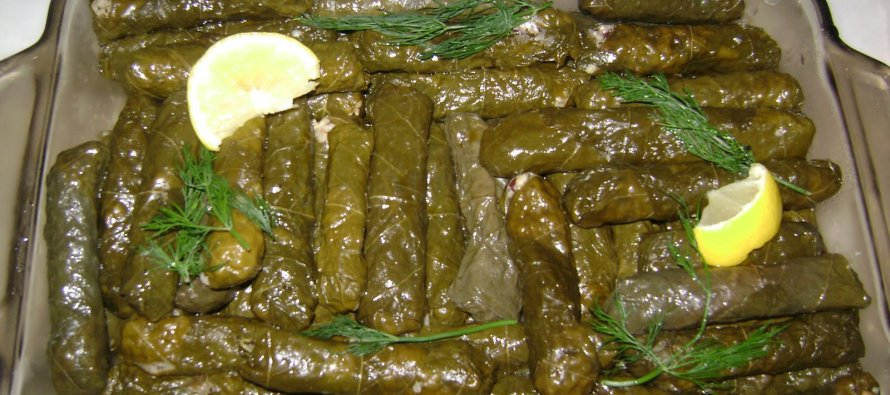

Sarma

Malzemeler
Yarım kilo salamura asma yaprağı
1 buçuk su bardağı pirinç
Yarım yemek kaşığı salça
1 adet soğan
1 tatlı kaşığı tuz (Yaprağın tuzuna göre ayarlayın, bazen hiç gerekmiyor)
1 çay kaşığı karabiber
1 su bardağı su (iç harç için)
4-5 dal maydanoz
1 çay bardağı zeytinyağı
Zeytinyağlı Yaprak Sarma
Sarma işlemine başlamadan önce yaprakları 1,5 – 2 saat kadar ılık suda bekletin.
Derin bir tencereye zeytinyağını dökün. 1 soğanı küçük küçük doğrayın ve zeytinyağında
kavurun. Soğan kavrulunca yıkanmış pirinçleri atın ve biraz daha kavurun. Salçasını,
tuzunu ve baharatlarını ekleyip, karıştırıp suyu ekleyin. Kısık ateşte suyunu çekmesini
bekleyin. İç harcı ocaktan alınca ince ince kıyılmış maydanozu ekleyip karıştırın.
Yaprakların suyunu süzün, yıkayın. Sarma işlemine başlayabilirsiniz. Yaprakların ters
yüzünü çevirin. İç harçtan 1 tepeleme tatlı kaşığı kadar alın ve ince bir şekilde sarın.
Çok doldurmayın çünkü pirinçler az daha şişecek pişerken. Sardığınız sarmaları tencereye
aralarda boşluk kalmayacak şekilde dizin. En üste limon dilimleri koyun. Sarmaların yarısına
gelecek kadar su koyup kaynayana kadar orta ateşte kaynadıktan sonra kısık ateşte yapraklar
yumuşayana kadar pişirin. Kısık ateşe alınca bir iki yemek kaşığı zeytinyağı gezdirin.
Su yetmezse sonradan eklenebilir. Yoğurtla, limonla servis edin. Afiyet olsun